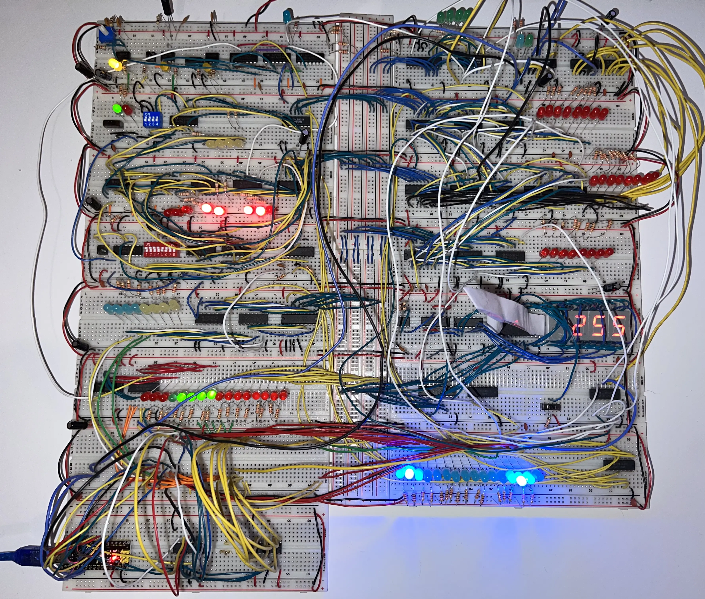
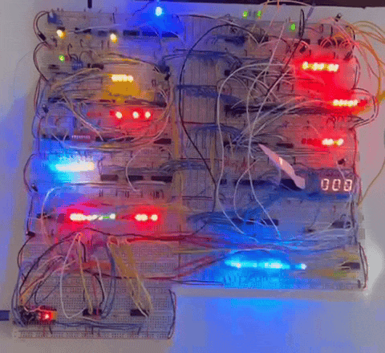

I built an 8-bit computer from scratch on multiple breadboards and documented the entire process. The computer has 16 bytes of RAM, a custom instruction set, and an ALU that can perform addition and subtraction.
I sectioned each article based on the kit
Kit 3 - RAM and Program Counter
Kit 4 - Output and Control Logic
Here it is multiplying 13*12=156.
